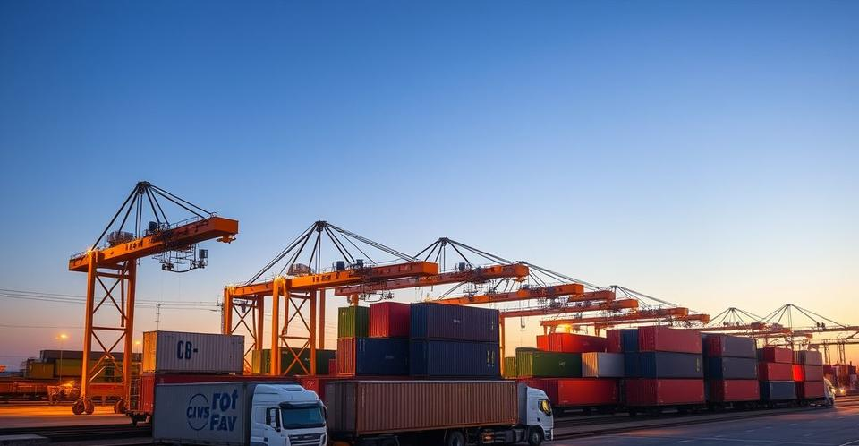

Compare states, find certified sites, and reach the right economic development team. Every figure on this site shows its source and date.
Four things international companies ask about first. On the live site each card opens a page of sourced data for the region and every state.
Deepwater ports on the Atlantic and Gulf, Class I rail, and interstate corridors that reach most US consumers within two days by truck.
Labor force size, wages by occupation, and graduates by field for every state, from federal statistics refreshed on a schedule.
Industrial electricity prices and generation mix by state, in cents per kWh, so plants can be costed before the first call.
Certified sites and megasites nominated by members, each linked to the state or utility database of record.
Regional sector pages with cluster maps and anchor employers. Each card lists the states in this demo that count the sector among their leaders.
Every profile follows the same template, so two states read the same way and no member is favored by design.
Choose up to three. Consultants can download the table; every value links to its source.
Sample listings. On the live site, members nominate their priority sites and each listing links to the database of record.
Landing pages by source market and a page for every mission and event, each with a meeting request form.
SpaceCom, London, February 24 and 25, 2027. Space, aerospace and advanced manufacturing companies evaluating a US base.
Following the 2026 delegations to Hannover Messe and ILA Berlin. Guidance for manufacturers and suppliers planning US production. Deutsch verfügbar.

AI illustrationMeet state and local economic developers from across the South in one place. Schedule time with the delegation ahead of the Summit.
Most companies researching a location never fill out a form. The site is instrumented so SEDC can see that research and act on it.
An executive reads two state profiles and the sites directory after meeting the delegation.
ProspectEngage website intent names the company, its country and industry, and the pages it read.
A US-based engagement professional calls to confirm the project, timing and site needs.
A prospect profile goes to the states the company named, or to all members on equal terms.
Your message goes to SEDC and to the states you select. If you have no preference, it is shared with all member states on equal terms.